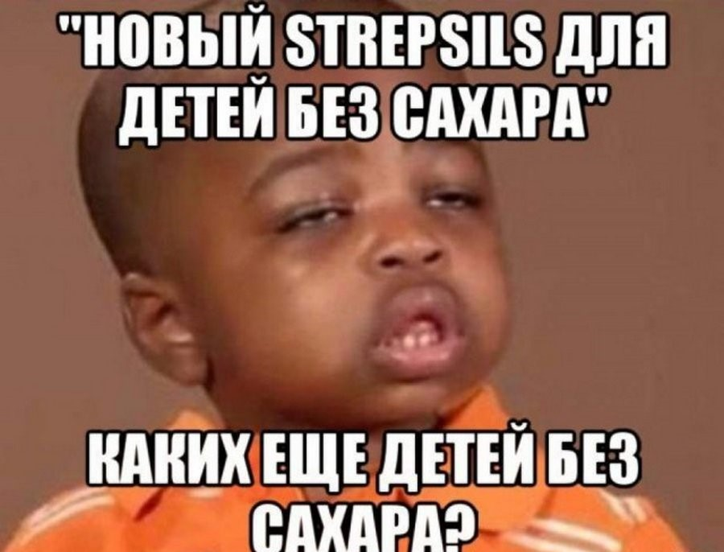
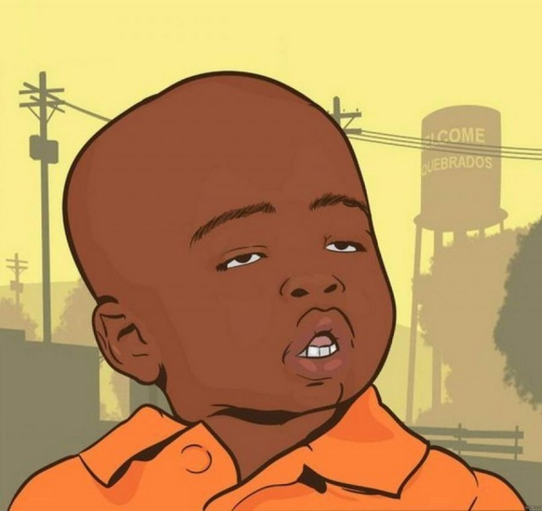

Генератор мемов
Какой пацан?
Мем получился из скриншота с обучающего видео для детей от 2011 года. Малышей учили правильно пользоваться
туалетом.
Несколько детей поют песню Poop Song, сидя на унитазе, после чего встают и говорят какашке «Пока».
Через пару лет прогулок видео по Сети мем стал популярным и в России.
